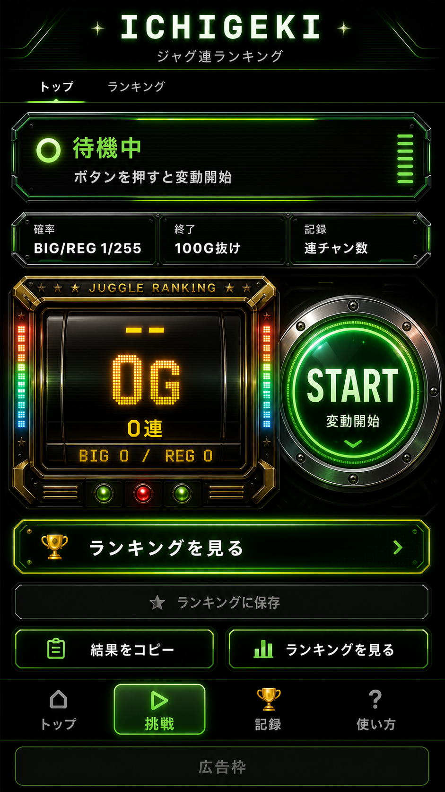
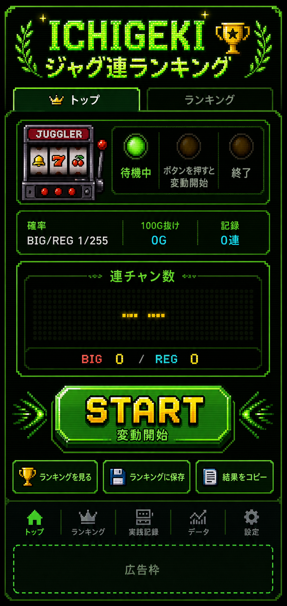

中央エリアのゲーム感イメージ
通常のゲーム機風案と、ドット絵・レトロゲーム風案を比較できます。

案1: ネオンゲーム機風。実装する場合は「結果カード」「STARTボタン」「待機中カード」の3点をCSSで再現するのが現実的です。

案2: ドット絵・レトロゲーム風。全体に使うより、結果カードやボタンだけに混ぜる方が読みやすさを保てます。
通常のゲーム機風案と、ドット絵・レトロゲーム風案を比較できます。

案1: ネオンゲーム機風。実装する場合は「結果カード」「STARTボタン」「待機中カード」の3点をCSSで再現するのが現実的です。

案2: ドット絵・レトロゲーム風。全体に使うより、結果カードやボタンだけに混ぜる方が読みやすさを保てます。